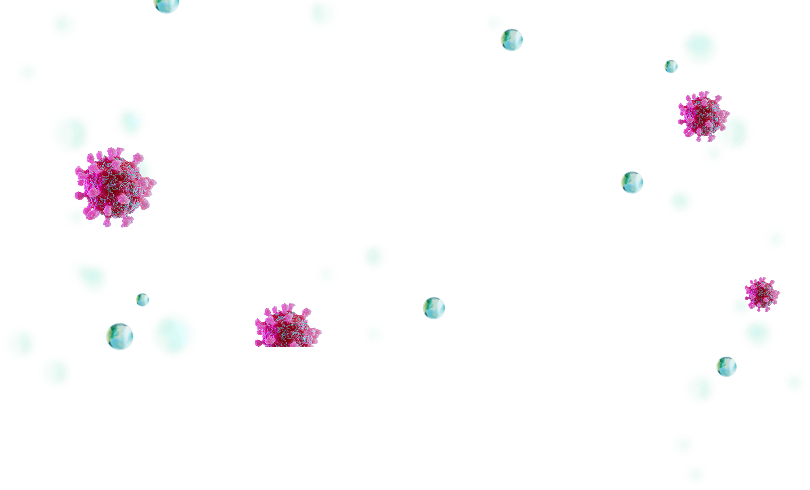
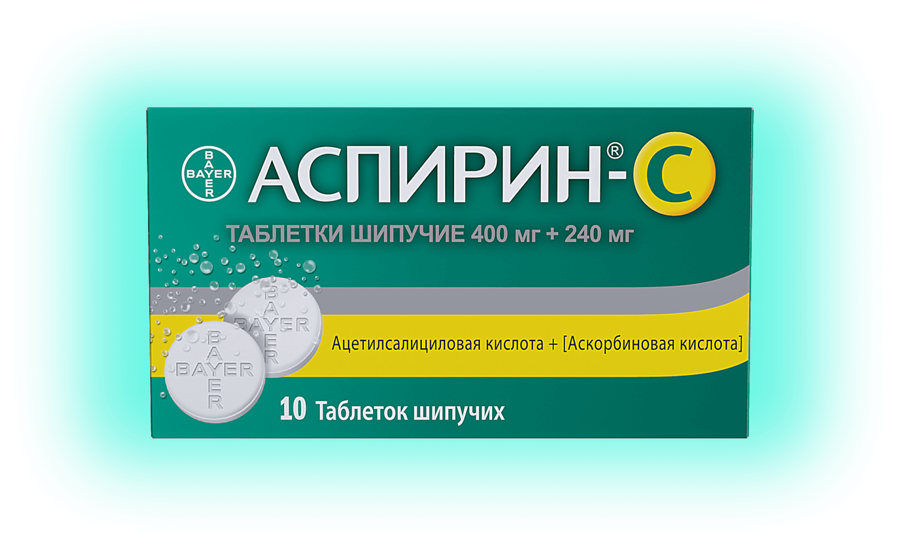
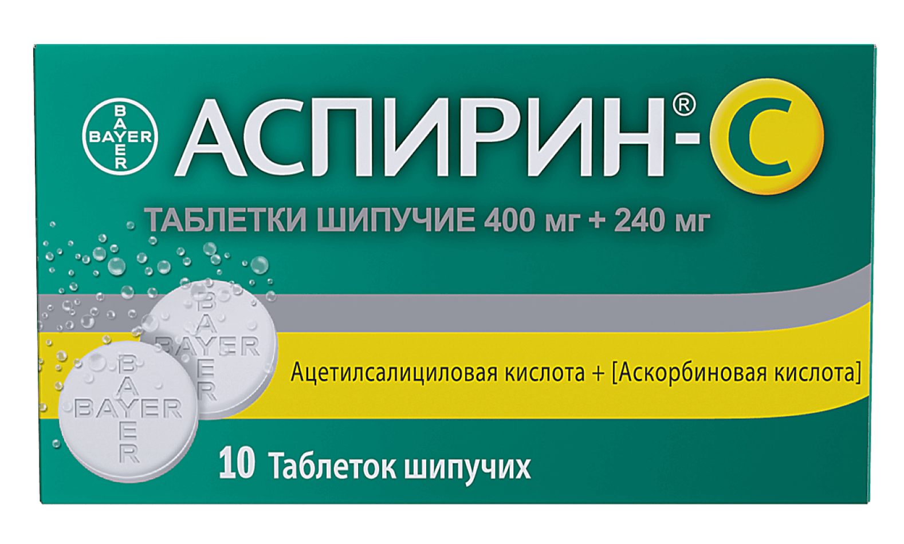
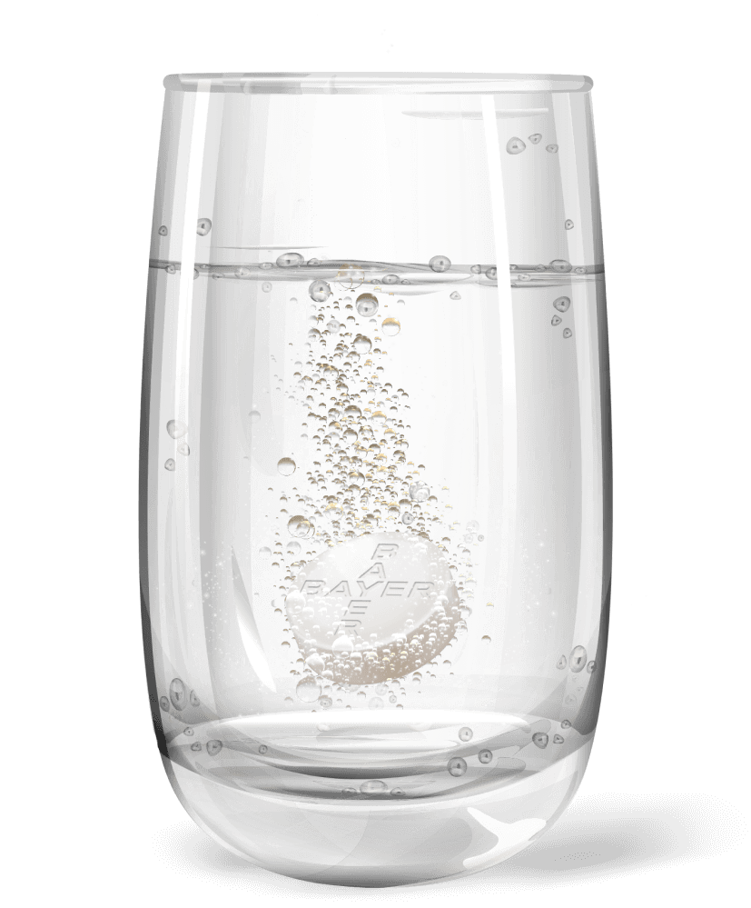

Продолжительность – 00:10:30
Малявин А. Г.
профессор кафедры фтизиатрии и пульмонологии Московского государственного медико-стоматологического университета им. А. И. Евдокимова, генеральный секретарь Российского научного медицинского общества терапевтов.
Андрей Георгиевич в своей видеолекции:
- раскрывает вопросы медикаментозной терапии ОРВИ: патогенетическая или симптоматическая терапия предпочтительнее при ОРВИ?
- рассматривает особенности противовоспалительного действия ацетилсалициловой кислоты, которое отсутствует у парацетамола
- акцентирует внимание на вопросах безопасности при применении ацетилсалициловой кислоты и парацетамола
- раскрывает особенности выбора средства от «простуды»: парацетамол-содержащие комбинированные препараты или комбинация ацетилсалициловая кислота + витамин С
Показания
к применению1
к применению1
Для симптоматического лечения у взрослых и детей старше 15 лет
Лихорадочный синдром при простудных и других инфекционно-воспалительных заболеваниях у взрослых и детей старше 15 лет.
Умеренно или слабовыраженный болевой синдром различного происхождения:
- головная боль
- зубная боль
- мигрень
- невралгия
- мышечная боль
- боли при менструациях



Комбинация ацетилсалициловая кислота + витамин С в формате шипучих таблеток:
обладает ярко выраженным противовоспалительным действием1
помогает облегчить симптомы, связанные с воспалением и интоксикацией (жар, озноб, ломота)1
способствует регенерации поврежденных клеток и тканей2
содержит витамин С для активации иммунитета3,4
Инструмент дополненной реальности: удобно, наглядно, просто
Какие механизмы действия у молекул в составе комбинации ацетилсалициловой кислоты и витамина С помогают бороться с симптомами ОРВИ? — Вы увидите своими глазами в дополненной реальности!
Отсканируйте QR-код, чтобы открыть инструмент в своем мобильном телефоне
Модули программы
ОРВИ – острая респираторно-вирусная инфекция.
Список литературы:
- Общая характеристика лекарственного препарата Аспирин®-С ЛП-№(001128)-(РГ-RU)-110822.
- Serhan C. N. Pro-resolving lipid mediators are leads for resolution physiology. Nature. 2014 Jun 5; 510(7503): 92-101.
- Hemilä H. Vitamin C and Infections. Nutrients. 2017; 9(4): 339. DOI:10.3390/nu9040339.
- Carr A. C., Maggini S. Vitamin C and Immune Function. Nutrients. 2017; 9(11): 1211. DOI:10.3390/nu9111211.
CH-20240925-115